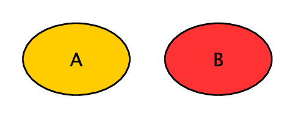
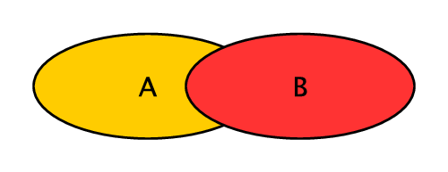
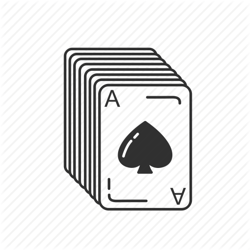
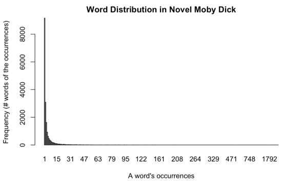
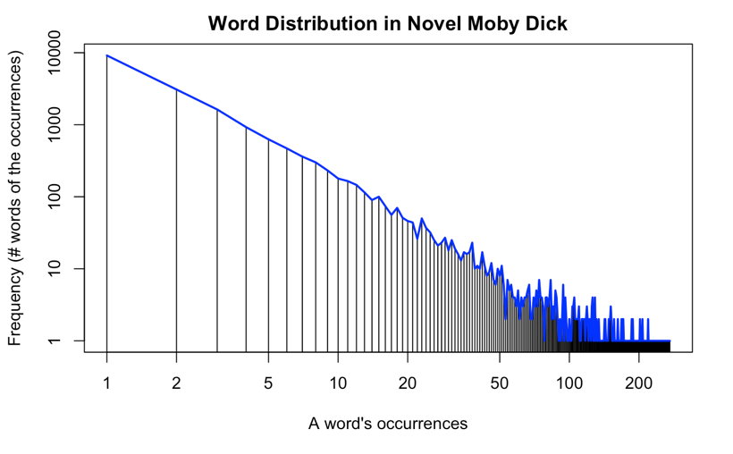

4 Probability and Statistical Thinking
Probability theory is nothing but common sense reduced to calculation.
Pierre-Simon Laplace
In 2012, a national retailer store broke the news by identifying a teen pregnancy before her father knew about it. After seeing coupons of baby clothes and cribs sent to his daughter, the enraged father went to the store to complain about the incident, only to discover later that he was the one who needed to apologize for his ignorance.
While this story unfolded a spectrum of ethical and privacy-related issues, we will focus on the technical question for now – how did the store figure out the girl was pregnant and it is therefore relevant to send her baby coupons?
As one can imagine, this was based on the evidence of related purchases in the girl’s shopping history. But even with that, the store could not be certain about the pregnancy and had to guess how likely that was the case. Computing the likelihood or probability is at the core of the technical problem here. We shall look at the basic theory and rules of probability before we can use them to reduce all this to calculation.
4.1 Probability
Probability, according to the Oxford Dictionaries, is "the quality or state of being probable; the extent to which something is likely to happen or be the case." While this definition appears common sense and easy to understand, in reality we use the term probability or likelihood in two very different ways. In the Frequentist view, probability is equivalent to the long-term frequency of an event’s occurrence. Flipping a perfect coin, for example, has a \(50\%\) probability to turn up a head and \(50\%\) tail because each side has equal chances (frequencies) if it is repeated for sufficient times.
 {w {w |
idth=“1in”} |
On the other hand, the Bayesian view of probability is associated with the degree of belief without complete information or knowledge. Each coin flipping has nothing to do with a long-term repetition and which side it turns up is a result of many factors. Likewise, how likely you are going to get an A on an upcoming test is a belief based on the known and the unknown – for example, how well you are prepared and what questions the test will be comprised of.
These views are rather divided and may lead to different approaches of modeling and interpretation. Nonetheless, many methods and tools of great practical values have been derived from both views. And we can focus on their application without digging deep into the theoretical subtlety.
4.2 Probability Basics
We denote the probability of an event A’s occurrence as \(P(A)\). A probability is a numeric value between 0 and 1:
\[ 0 \le P(A) \le 1 \]
where \(0\) probability means the event will never occur and \(1\), or \(100\%\), means it will always occur.
Be A the event of turning up a head in a perfect coin flipping, \(P(A)=\frac{1}{2}\); if A is the event of getting number \(3\) by rolling a dice, we may estimate \(P(A)\) to be \(\frac{1}{6}\) if we assume six equal sides without additional information.
The probability of the complement of event A, or that A will NOT occur, is denoted by \(P(A')\),1 which can be computed by:
\[\begin{aligned} P(A') & = & 1 - P(A) \end{aligned}\]
Head and tail on a coin complement each other. Hence:
\[\begin{aligned} P(Tail) & = & P(Head') \\ & = & 1 - P(Head) \end{aligned}\]
For mutually exclusive events A and B, their union probability, namely the probability that either one of them will occur is the sum of their individual probabilities:
\[\begin{aligned} P(A \cup B) & = & P(A) + P(B) \end{aligned}\]

where the symbol \(\cup\) (union) is equivalent to logical OR and implies addition of the events. When two events are mutually exclusive, they do not occur simultaneously and, as visualized in Figure [fig-prob-no_overlap], have no overlap or intersection in their probability space. Because of that, we can simply add the two together.
In the case of flipping a coin, Head and Tail are mutually exclusive. By the same rule, we have:
\[\begin{aligned} P(Head \cup Tail) & = & P(Head) + P(Tail) \end{aligned}\]
which is \(1\) because Head and Tail complete the entire probability space. Likewise, numbers \(1\) through \(6\) on a dice are complete, mutually exclusive events. The same is true that you always get one of the six numbers on a dice:
\[\begin{aligned} & & P(1 \cup 2 \cup 3 \cup 4 \cup 5 \cup 6) \\ & = & P(1) + P(2) + P(3) + P(4) + P(5) + P(6) \\ & = & 1 \end{aligned}\]
4.3 Joint probability
If events A and B are not mutually exclusive, their union probability should be the sum of their probabilities subtracted by the probability of them occurring simultaneously – that is the joint probability:
\[\begin{aligned} P(A \cup B) & = & P(A) + P(B) - P(A \cap B) \end{aligned}\]

The reason for subtracting the joint probability \(P(A \cap B)\) can be illustrated in Figure [fig-prob-overlap]. As shown in the figure, when A and B can occur simultaneously, they have an overlap (intersection) which should be discounted so it is not counted twice in the addition.
Here is an example of not mutually exclusive events – what is the probability of drawing a card from a deck (52 cards) that is either an Ace (4 out of 52) or a Spade (13 out of 52). The probability of having each can be estimated by:
\[\begin{aligned} P(Ace) & = & \frac{4}{52} \\ P(Spade) & = & \frac{13}{52} \end{aligned}\]

Because there is \(1\) card that is both an Ace and a Spade, the joint probability is \(P(Ace \cap Spade) = \frac{1}{52}\) and the union probability can be computed by:
\[\begin{aligned} & & P(Ace \cup Spade) \\ & = & P(Ace) + P(Spade) - P(Ace \cap Spade) \\ & = & \frac{4}{52} + \frac{13}{52} - \frac{1}{52} \end{aligned}\]
4.4 Independent events
Again, the joint probability of A and B, denoted by \(P(A \cap B)\),2 is the probability that both A and B will occur.
If A and B are independent, meaning the occurrence of A has nothing to do with the occurrence of B, then the join probability can be computed by the simple multiplication:
\[\begin{aligned} P(A \cap B) & = & P(A) P(B) \end{aligned}\]
For example, if you flip a coin and roll a dice, how likely will you get a Head and number \(3\). Because the two events are independent, their joint probability can be computed by:
\[\begin{aligned} P(Head \cap 3) & = & P(Head) P(3) \\ & = & \frac{1}{2} \times \frac{1}{6} \end{aligned}\]
The joint probability is certainly not limited to two events. You can apply the same rule to three or more independent events. For a set of independent events \(E = \{E_1, E_2, .., E_m\}\), their joint probability is computed by the product of their probabilities:
\[\begin{aligned} P(E_1 \cap E_2 \cap .. \cap E_m) & = & \prod_{i=1}^{m} P(E_i) \end{aligned}\]
Again, the equation holds as long as the events are independent – that is, one event’s occurrence does not influence the other. While this is often unrealistic, event independence is often assumed for model simplicity.
4.5 Dependent Events
Now let’s take a step further and look at joint probability of dependent events. If the occurrence of A is dependent on the occurrence of B, we can use \(P(A|B)\) to denote the probability of event A on the condition that event B has already been observed. This conditional probability is referred to as the posterior probability because it is estimated after the fact (here the observation of event B).
The joint probability that both events A and B will occur is then computed by:
\[\begin{aligned} P(A \cap B) & = & P(A|B) P(B) \end{aligned}\]
where \(P(B)\) is the prior probability, which is a priori before the further observation of data. Again, \(P(A|B)\) is the posterior probabilities conditioned on the observation of the other event and is about the probability that event A will occur if we know event B occurs. Likewise, the joint probability can also be computed by:
\[\begin{aligned} P(A \cap B) & = & P(B|A) P(A) \end{aligned}\]
This is based on the prior probability of and the posterior probability conditioned on event A. So far the discussion on probability may look quite abstract. So let’s take a look at an example to make sense of this.
Suppose you are running a restaurant and you look at your transaction data, and try to learn about the statistics on how to improve your business. Suppose you find out \(60\%\) of the customers order burgers, \(54\%\) order burgers and fries. Now you want to know – if a customer already orders a burger, how likely he will also order fries. And this question is certainly relevant to your business.
First let’s setup proper notation. Let:
\(F\) be the event that a customer orders fries, and
\(B\) be the event that a customer orders burgers.
In this case, you know \(60\%\) of the chance a customer orders burgers, which is \(P(B) = 0.60\). With \(54\%\) of customers ordering both burgers AND fries, the joint probability of the two events \(P(F \cap B) = 0.54\).
Now the question is about the probability of a customer ordering fries (\(F\)), on the condition that she has already ordered a burger (\(B\)), which is the posterior probability \(P(F|B)\). By replacing A and B with F and B respectively in Equation [eq-prob-joint_dep], we have:
\[\begin{aligned} P(B) P(F|B) & = & P(F \cap B) \end{aligned}\]
Divide both sides by P(B), we get:
\[\begin{aligned} P(F|B) & = & \frac{P(F \cap B)}{P(B)} \\ & = & 0.54 / 0.60 \\ & = & 0.90 \end{aligned}\]
So it appears the customer will probably (with \(90\%\) probability) order fries as well if she is ordering a burger.
We can also apply these probability rules to the retailer store story we discussed at the beginning of the chapter. We can ask questions like – if a customer has purchased a crib, how likely will she be interested in coupons of baby clothes? With other related evidence in the shopping history, can we predict whether the customer is pregnant (or how likely she is) and, if so, follow up with customized marketing efforts?
4.6 The Bayesian Theorem
To attack the above questions, we need to take one step further and look at the Bayes Theorem.
From equations [eq-prob-joint_dep] and [eq-prob-joint_dep2], we have:
\[\begin{aligned} P(A|B) P(B) & = & P(B|A) P(A) \end{aligned}\]
Divide both sides by \(P(B)\), we get:
\[\begin{aligned} P(A|B) = \frac{P(A) P(B|A)}{P(B)} \end{aligned}\]
And with this, we arrive at a very important probability rule, the Bayes’ Theorem (rule) on computing posterior probabilities. It is named after Rev. Thomas Bayes3 and further developed by Pierre-Simon Laplace. The rule provides a foundation for various applications with Bayesian inference and probabilistic modeling.
4.7 Naive Bayes’ Model
Let us look at an application of the Bayes Theorem to get a sense of how useful the theory is in solving practical problems. One such application is the Naive Bayes model, which is widely adopted in machine learning, data mining, and information retrieval. Pay attention to the two keywords – Naive and Bayes – the model is Naive because the it has naive assumptions about variable independence, and is Bayesian because the core of the model is the Bayes’ Theorem.
Ultimately, the Naive Bayes model is to estimate the probability of an inference (hypothesis \(H\)) given observed data (evidence \(E\)), that is, in the binary scenario, for example, \(P(H|E)\) (true) vs \(P(H'|E)\) (false). We can compute these probabilities according to the Bayes’ rule:
\[\begin{aligned} P(H|E) & = & \frac{P(E|H) P(H)}{P(E)} \\ P(H'|E) & = & \frac{P(E|H') P(H')}{P(E)} \end{aligned}\]
where prior probability \(P(E)\) is the common denominator that does not differentiate the two and can be ignored for now. \(P(H)\) and \(P(H')\) can be estimated a priori without evidence \(E\), whereas \(P(E|H)\) and \(P(E|H')\) can be computed using data observed, in cases when the hypothesis holds or when it does not.
We shall use a specific example to show how it works. In clinical diagnosis, a doctor observes a patient’s symptoms (evidence) and determines whether the patient has certain disease (inference / hypothesis). Chickenpox, for example, exhibits symptoms such as fever and blisters (rash). Let:
\(E_1\) denote the symptom of fever, and
\(E_2\) denote the symptom of blister (rash).
The question is how likely the patient has developed chickenpox (hypothesis \(H\)) if there are symptoms of both fever \(E_1\) and blisters \(E_2\).
Suppose4 the prevalence of chickenpox is \(20\) in every \(1,000\) individuals, that is \(P(H) = 0.02\) and \(P(H')=0.98\); of those who develop chickenpox, \(90\%\) have fever (\(P(E_1|H)=0.90\)) and \(55\%\) have blisters (\(P(E_2|H)=0.55\)); of those without chickenpox, the chances of have these individual symptoms are \(P(E_1|H')=0.10\) for fever and \(P(E_2|H')=0.05\) for blisters.
The first probability we need to attack is \(P(E|H)\), the probability that a patient exhibiting the observed symptoms if she indeed has chickenpox. Because we consider two symptoms here, this is about the joint probability when fever and blisters appear simultaneously. With the Naive assumption that the symptoms’ occurrences are statistically independent, \(P(E|H)\) can be computed by:
\[\begin{aligned} P(E|H) & = & P(E_1|H) P(E_2|H) \end{aligned}\]
Put this in Equation [eq-prob-bayes_he] and we get:
\[\begin{aligned} P(H|E) & = & \frac{P(E_1|H) P(E_2|H) P(H)}{P(E)} \\ & = & \frac{0.90 \times 0.55 \times 0.02}{P(E)} \\ & = & \frac{0.0099}{P(E)} \end{aligned}\]
Likewise, we can compute the probability of a false hypothesis given the same evidence (symptoms) by:
\[\begin{aligned} P(H'|E) & = & \frac{P(E_1|H') P(E_2|H') P(H')}{P(E)} \\ & = & \frac{0.25 \times 0.02 \times 0.98}{P(E)} \\ & = & \frac{0.0049}{P(E)} \end{aligned}\]
The result shows \(P(H|E) > P(H'|E)\), meaning that it is more likely than not the patient has developed chickenpox. Again, this model is based on the Bayes’ theorem and the assumption that evidential events (symptoms) observed are statistically independent. In another word, the occurrence of one symptom has nothing to do with the other. In reality we know this independence assumption is rarely true. For example, one who has blisters is more likely to have fever than those without.
In the above example, we only use two pieces of evidence (symptom observation) to model the likelihood of chickenpox. In reality, this can be extended to any number of predictor variables where \(E\) is a set of variables \(E_1, E_2, .., E_m\) and \(m\) is the size of the set. In this general case, the Naive Bayesian Model in equation [eq-prob-bayes_he] can be extended to:
\[\begin{aligned} P(H|E) & = & \frac{P(E|H) P(H)}{P(E)} \\ & = & \frac{P(E_1|H) P(E_2|H)..P(E_m|H) P(H)}{P(E)} \\ & = & P(H) \prod_{i=1}^{m} P(E_i|H) / P(E) \end{aligned}\]
Likewise, on the probability of a false hypothesis:
\[\begin{aligned} P(H'|E) & = & P(H') \prod_{i=1}^{m} P(E_i|H') / P(E) \end{aligned}\]
where variables \(E_1, E_2, .., E_m\) are assumed to be statistically independent. The main purpose of having this naive assumption is for mathematical simplicity when we compute joint probabilities. Although this assumption is at odds with reality, related models have turned out to perform quite well in experiments. Practically the number of variables (features) \(m\) can be very large. For example, in text analysis, it is common to treat unique words as individual features (variables) and, with even a moderate text collection, there can be tens of thousands, if not millions, of variables in the model.
The Bayes Model is not limited to a binary case, e.g. chickenpox vs. not chickenpox. It can also be applied to any classification problem on a number of discrete outcomes. In that case, we simply need to compute the probability of each discrete outcome (hypothesis) and find out which one has the greatest likelihood. It can also be extended to a continuous case where numeric predictions can be made based on certain probability distribution models, which we will discuss later in the chapter.
4.8 Probability Estimators
Again, consider Equation [eq-prob-bayes_hem], in order to compute the probability of each hypothesis, we need to first estimate the probability of each evidence \(E_i\) in \(\prod_{i=1}^{m} P(E_i|H)\). Where do these probabilities come from? Essentially they are learned from the training data where we can count their frequencies, or the number of times each unique situation occurs. For now, the probability \(P(E_i | H)\) is computed by:
\[\begin{aligned} P(E_i | H) & = & \frac{F(E_i | H)}{F(H)} \end{aligned}\]
where \(F(E_i | H)\) is the number of instances with \(E_i\) where hypothesis \(H\) is true and \(F(H)\) is the total number of instances with the true hypothesis.
Imagine you are working on the problem of email spam detection. You have a training data set of \(1,000\) emails and \(100\) have been identified spams (where hypothesis \(H_{spam}\) is true). Suppose \(prize\) is one of the keywords (evidence \(E_{prize}\)) that can be used to model the spam detection problem and, of the \(100\) spam emails (\(H_{spam}\)) there are \(20\) containing that keyword prize. In this case, \(F(H_{spam}) = 100\) and \(F(E_{prize} | H_{spam}) = 20\) so, according to the probability estimator in equation [eq-prob-pf], the probability \(P(E_{prize} | H_{spam})\) can be computed by:
\[\begin{aligned} P(E_{prize} | H_{spam}) & = & \frac{F(E_{prize} | H_{spam})}{F(H_{spam})} \\ & = & 20 / 100 \\ & = & 0.2 \end{aligned}\]
This will work just fine as long as the relative frequencies (occurrences) of related keywords in the training data (sample) are proportional to those of the same keywords in all spam emails in the world (population). In this case, we assume what we observe in the sample data is what will most likely occur in the population.
In reality, however, we may observe data in samples with varied departures from the entire population. Imagine we want to use prize as one feature in the Naive Bayes but observe no occurrence at all of this term in the training spam data, that is \(F(E_{prize} | H_{spam}) = 0\).
In this case, are we to simply conclude the probability of having prize in any spam email \(P(E_{prize} | H_{spam})\) is \(0\)? This is obviously a premature conclusion – the fact that you have not seen an elephant does not lead you to conclude on the non-existence of that very creature. There is variance in the data and we do not want to be misled by data in its departure (skewness) from the overall reality.
Data may be localized, just as the story of blind men and elephant shows (Figure 1.1). But we should aim to see the whole picture.
In addition, there is also an undesired consequence for having a zero probability in the Naive Bayes model. With \(E_{prize}\) as one of the evidence features, its probability \(P(E_{prize} | H_{spam})\) is one of the factors in computing the product in the Bayes equation above. When \(P(E_{prize} | H_{spam}) = 0\), it leads to \(P(H|E) = 0\) regardless of the values of other variables.
In short, we have observed that zero probabilities are not desirable, neither theoretically nor practically. One simple remedy to zero probability estimates, as suggested by Pierre Laplace, is to add \(1\) to each frequency (count) in the sample. So the frequency of having term \(prize\) in the spams becomes:
\[ F(E_{prize} | H_{spam}) + 1 \]
To be fair, we also need to add \(1\) to other frequency counts, including the frequency of NOT having the term \(prize\) in the spam subset:
\[ F(E'_{prize} | H_{spam}) + 1 \]
The above two are complete and mutually exclusive cases. Hence, the total number of instances in the spams becomes:
\[\begin{aligned} & & F(E_{prize} | H_{spam}) + 1 + F(E'_{prize} | H_{spam}) + 1 \\ & = & F(H_{spam}) + 2 \end{aligned}\]
Note that we add \(2\) to the total number because we have a binary variable, namely having term \(prize\) (true) vs. not having it (false). If a variable has \(k\) discrete values, then we need to add \(k\) to the total. For example, a categorical variable that marks an email’s importance may have three different levels such as low, normal, and high. If we add \(1\) to the frequency of each level, in the end we will have added \(3\) to the total.
But the question then is why add \(1\)? In fact the idea is that we can add any constant \(c\) to each count so zero values can be avoided. And the probability of observing a variable value \(v\) within the sample where the hypothesis is true can be computed by:
\[\begin{aligned} P(E_i = v | H) & = & \frac{F(E_i=v | H) + c}{F(H) + kc} \end{aligned}\]
where \(k\) is the number of discrete values variable \(E_i\) can have, e.g. \(k=3\) for the email priority variable, and \(c\) is a chosen constant which represents some prior knowledge about the chance of any value. A great \(c\) value will make the probability more predetermined and a lesser value gives relatively more weigh to frequencies observed in the sample data. When a discrete value occurs less frequently in the sample, \(c\) will change its probability estimate more dramatically.
In a sense, an added constant \(c\) favors the rare values and penalizes the frequent ones. Other than simplicity, is this a rational strategy to estimate the probabilities? The answer depends on how much we know about the probability distributions with or without the sample data. If in fact we know some values are going to occur more frequently regardless – for example, we can safely assume most emails would have been marked as normal – then we should add more to its count proportionately in the sample data. The probability can be estimated by:
\[\begin{aligned} P(E_i = v | H) & = & \frac{F(E_i=v | H) + c p_v}{F(H) + k c} \end{aligned}\]
where \(p_v\) is the a priori probability of each discrete value \(v\) (\(v \in [v_1, v_2, .., v_k]\)) and they add up to \(\sum_v p_v = 1\). The assignment of \(p_v\) values depends on prior knowledge. Practically it is not always clear how they can be obtained. Besides domain knowledge, training samples are often the major source where we gather related statistics so the simple transformation of adding \(1\) or another constant is what works in many practical applications.
4.9 Probability Distributions and Models
Think about this. The very fact that we have to normalize the obtained frequencies – to avoid zeros or for other purposes – indicates that we do not totally trust what observed data (samples) can tell us about. The underlying assumption is that we have certain understanding (prior knowledge) about how data should behave and we will need to correct the data whenever they drift from that expected behavior. By doing the normalization or smoothing, we impose a model of expected probability distributions on the analysis.
We shall now prepare us with an introductory discussion of probability distributions, from discrete to continuous cases.
First let’s look at some discrete cases. Imagine you toss a coin for 1000 times and in the perfect world you get 500 heads and 500 tails. And you can create a simple bar plot to show the frequency distribution of 500 for both heads and tails. This is a uniform distribution because every event, head vs. tail, has an equal chance.
Now instead of talking about frequencies or counts, we can describe the distribution in terms of chance (probabilities). And in this case, head and tail have equal chances (probabilities) of 50% or 0.5 in the distribution, as Figure 1.3 shows.
For the sake of discussion, let’s extend the binary case, head vs. tail, to a larger number of exclusive outcomes. For example, imagine you roll a dice. If you roll it for a sufficient number of times, the sides will have equal chances to appear, that is, each side from 1 to 6 has a probability of 1/6 to occur, as shown in Figure 1.4.
Two simple but important observations here:
The probabilities of the six sides add up to one because they are exhaustive, mutually exclusive choices;
The probability distribution is a uniform distribution as they are all equal. The heights of the bars form a flat, horizontal line that characterizes the uniform distribution.
4.10 Continuous Probability Distribution
So far these are discrete distributions. But we can extend this to a continuous distribution. If the outcome \(x\) is no longer limited to such integers or specific labels. Perhaps the outcome of the question at hand can be any number in the range of 1 and 6, and you are to predict that number. If it is a uniform distribution in with the continuous variable, it remains a flat line in the range of 1 - 6, shown in Figure 1.5.
Again, when we add all probabilities up in the distribution, the total should still be \(1\). But because this is a continuous space, we are talking about infinite amount of numbers. The outcome can be number 3 or any decimal number such as \(3.14159\). To add the infinite number of heights (some sort of "probability" values) in the distribution is essentially integration of the distribution function (a flat line in this case), that is, the area under the distribution line or curve. The result of the integration or the entire area will always be \(1\), as long as the plotted range includes all possible outcomes.
With a uniform (flat) distribution, the area is a rectangle as shown in Figure 1.5 and it is easy to calculate the area. In the above case, the area of the rectangle between \(1\) and \(6\) can be computed by width times height, which is \((6-1) \times 0.2 = 1\). So this meets the expectation that the sum of the entire probability distribution is \(1\).
Although the above is discussed as a probability distribution, we shall clarify on an important concept. The uniform height \(0.2\) in Figure 1.5 is NOT a probability value per se. It is what we refer to as a probability density, but not exactly a probability. For now, let us move on from the uniform distribution to a more common distribution in the real world before we come back to elaborate on the concept of probability density again.
In the real world, you do not often see uniform distributions5. Normal (Gaussian) distributions are much more common. For example, if we collect statistics about adult male heights in the U.S., you will see the heights are not equally likely. Instead, the overwhelming majority of (average) people have the average height around 70 inches. And much rarer are shorter than 62 or taller than 78. The whole distribution is a bell curve as shown in the figure here.
This is again a probability density distribution so if you integrate the curve, the total area under it will be \(1\) or \(100\%\) probability. When you pick a particular number on the \(x\) axis such as \(70\) inches in the middle, you notice it is \(y = 0.1\) on the distribution curve. Now be careful that this value \(0.1\) does NOT mean that there is \(10\%\) chance to be \(70\) inches height (exactly).
Because they are infinite number of values in the range, each exact height value in fact has a \(0\) probability to occur. The reason is when we say \(70\) inches, we mean exactly \(70.000000...\) with an infinite number of decimal zeros. And it is close to impossible to get that exact value on a continuous scale.
Back to the question. So what does a value like \(0.1\) mean on the \(y\) axis? It means \(0.1\) probability density – that is, \(0.1\) probability per inch (range) on the adult height scale. And this value will change if you change the unit of height, for example by switching to centimeters.
What does this probability density entail now that it is not probability and it varies on the measuring unit? Probability density does allow you to compare probabilities of different continuous values and value ranges. For example, in the normal distribution here, you can still tell that the probability of a height around \(70\) inches is greater than that in the proximity of \(80\). But to tell the exact probability, you will need to specify a range. You can ask the question of how likely an adult height is \(70\) something (i.e. between 70 and 71) inches. And you can integrate the area under the bell curve in the range to find out.
To reiterate this point – on the simpler example of the uniform distribution presented in Figure 1.5, the \(0.2\) value on y is not probability but probability density or probability per unit. You can still tell that all probabilities are equal by looking at the flat line. And you can ask the question about how likely you will get a value between 2 and 4 by multiplying the density which is \(0.2\) and the range which is \(2\) and the result turns out to be \(0.4\) – that is \(40\%\) of the chance you will get a value in that range.
As always, all probabilities add up to \(1\) as you can verify by \(0.2 \times (6-1) = 1\). So if you ask how likely a value occurs in the range between \(1\) and \(6\), given the distribution in Figure 1.5, the answer is that it will always be true.
There are several major categories of probability distributions beyond the uniform and normal distributions we discussed here. Some of these are asymmetric, exhibiting a form of imbalance between the lower and higher ends. Power-law distributions and their variations, for example, are very common in many natural and social structures. They are often associated with basic counts in these structures and activities.
The distribution of wealth or income is an example of the power-law distribution, where the overwhelming majority is poor (with relatively little wealth) and a small percent at the top are extremely wealthy. This is a result commonly regarded as due to the Matthew Effect6, in which the rich get rich. In citation and network analysis, this effect is also known as the cumulative advantage(Price 1976) or preferential attachment(Barabási and Albert 1999).
Spoken language (word frequencies) follows the Zipf law, which can be regarded as a special case of the power-law distribution. Figure 1.7 shows the distribution of word frequencies taken from the novel Moby Dick. As shown in Figure 1.7 (a), there is a great divide between the rich and the poor – a large number of words have only been used once or twice in the novel (tall bars on the left of the distribution) where very few words have a frequency higher than \(100\) (the long tail).
It is difficult, however, to examine the long tail on normal coordinates as the values are very small (low) within a long range. Logarithmic transformation is often conducted to better visualize the distribution. The result is Figure 1.7 (b), where both \(x\) (words’ occurrences) and \(y\) (frequencies of the occurrences) have been transformed with logarithm.7
|
 |
 |
|
|
One prominent characteristic of a power-law distribution is that it follows a straight line on log-transformed coordinates spanning across a vast range of numeric orders and is therefore considered scale free. One should caution though that many distributions may roughly look linear with log-transformation when they are in fact the result of a different distribution. In reality, there are various constraints and capacity limits on related structures where the outcome is not ideally power-law. In social networks, for example, even those who are super active can only maintain up to a certain number of friendly contacts and therefore the outcome of friendship distribution will be subject to such human limits and not scale-free.
4.11 Probability Estimators
The first approach we used to compute probability is to follow whatever the sample data tell us. If we take a sample of \(1000\) emails and \(300\) of them are spams, the estimated probability is given by \(300/1000 = 0.3\). If we analyze \(100\) emails and NONE of them have the term prize in them, then we are bound to conclude the probability that we will ever encounter the term is \(0\). This naive method of trusting whatever in the sample data is part of a spectrum of methods referred to as the Maximum Likelihood Estimator (MLE).
Simply put, an MLE chooses as estimates the values that maximize the likelihood of the observed sample. In the case of observing \(0\) emails with term prize in the sample, we shall thus estimate the term never occurs in any email in the whole world (population) so that NOT observing it is the most likely outcome, which is the case of the observed sample. In general, for discrete distributions, the result of an MLE is given by frequencies of related values in the sample without further transformation.
4.11.1 Discrete Probability Estimation
Now if we have additional knowledge about the domain and can assume probabilities follow a particular distribution model, then the question becomes how we can specify parameters of that model to maximize the probability of the observed data. Suppose among all emails you receive, you find out for three particular days there are \(5\), \(3\), and \(7\) emails containing the term prize on each day. We assume that:
The number of such emails you receive one day is independent of that on another day. That is, receiving more or less such email today does not affect the number you will receive tomorrow and in the future.
During a small time interval, the probability of receiving such an email is proportional to the length of the time interval. That is, the longer the time, proportionally greater the probability.
Under these conditions, the probability of receiving \(x\) number of prize emails can be modeled by a Poisson probability distribution and the probability mass function is:
\[\begin{aligned} P(x) & = & e^{-\mu} \frac{\mu^x}{x!} \end{aligned}\]
where:
\(e\) is the Euler constant which is approximately \(2.71828\);
\(x\) is the number of such emails in question, and \(x!\) is the factorial \(x!=x \times (x-1) \times (x-2) \times .. \times 2 \times 1\);
\(u\) is the only parameter, the mean number of prize emails, to be estimated.
With an MLE, we are to maximize the likelihood of obtaining the 3-day sample, that is the joint probability of having \(5\), \(3\), and \(7\) emails \(P(x=5 \cap x=3 \cap x=7)\) on three separate days. Now that we assume the days are independent, the joint probability can be computed by:
\[\begin{aligned} & & P(x=5 \cap x=3 \cap x=7) \\ & = & P(x=5) P(x=3) P(x=7) \end{aligned}\]
With the Poisson probability function in Equation [eq-prob-poisson], this becomes:
\[\begin{aligned} & & P(x=5 \cap x=3 \cap x=7) \\ & = & e^{-\mu}\frac{\mu^5}{5!} \times e^{-\mu}\frac{\mu^3}{3!} \times e^{-\mu}\frac{\mu^7}{7!} \\ & = & \prod_{x \in [5,3,7]} e^{-\mu} \frac{\mu^x}{x!} \end{aligned}\]
Now MLE of the Poisson distribution is to estimate the only parameter, the value of mean \(\mu\), so that the above probability in Equation [eq-prob-point_poisson] is maximized. Now instead of maximizing the product (multiplications) of the probabilities, we can take the logarithm of Equation [eq-prob-point_poisson], which becomes:
\[\begin{aligned} l(\mu) & = & \ln(\prod_{x \in [5,3,7]} e^{-\mu} \frac{\mu^x}{x!}) \\ & = & \sum_{x \in [5,3,7]} \ln(e^{-\mu} \frac{\mu^x}{x!}) \end{aligned}\]
and try to maximize the sum of log likelihood8. We can do this by taking the derivative of Equation [eq-prob-point_poisson_log]:
\[\begin{aligned} l'(\mu) & = & \frac{1}{\mu} \sum_{x \in [5,3,7]} x - n \end{aligned}\]
where \(n\) is the number of observations of the sample, which is \(3\) for 3 days. The maximum can be reached with the derivative at \(0\), which is:
\[\begin{aligned} & & \frac{1}{\mu} \sum_{x \in [5,3,7]} x - 3 \\ & = & \frac{5+3+7}{\mu} - 3 \\ & = & 0 \end{aligned}\]
And we can conclude that:
\[\begin{aligned} \mu & = & (5 + 3 + 7) / 3 \\ & = & 5 \end{aligned}\]
maximizes the probability of observing the sample data of \(3\), \(5\), \(7\) on three days following the Poisson distribution. With the estimate for parameter \(\mu=5\), we can now compute the probability for any discrete value with Equation [eq-prob-poisson]. For example, we can find out that it is very unlikely on one day to receive \(10\) emails containing the term prize:
\[\begin{aligned} P(x=10) & = & e^{-\mu} \frac{\mu^x}{x!} \\ & = & e^{-5} \frac{5^{10}}{10!} \\ & \approx & 0.01 \end{aligned}\]
We can also make it a general case that, a Poisson MLE shall estimate the paramter \(\mu\) based on the sample mean:
\[\begin{aligned} \mu & = & \bar{x} \\ & = & \frac{\sum_{i=1}^{n} x_i}{n} \end{aligned}\]
where \(n\) is the number of observations in the sample data.
4.11.2 MLE for a Continuous Variable
For a continuous variable, we can also assume a specific functional form of its distribution such as a normal distribution and the objective of an MLE is to estimate related parameters (e.g. mean \(\mu\) and variance \(\delta^2\)) of the distribution function, from which the sample data are most likely to be observed. These parameter estimates are then used to compute probability densities at specific values or probabilities within certain ranges.
Suppose \(X\) is a numeric variable with a normal distribution, the probability of any value \(x\) is given by the following function:
\[\begin{aligned} f(x) & = & \frac{1}{\sqrt{2\pi\delta}} e^{-\frac{(x-\mu)^2}{2\delta^2}} \end{aligned}\]
This is one of the most recognized formulas in statistics. Although it looks daunting, there are only two parameters and the rest are constants, including \(\pi\) the ratio of a circular circumference to its diameter which is about \(3.14159\). From a sample data of \(n\) instances, the two parameters, namely mean \(\mu\) and variance \(\delta^2\), can be estimated by the sample mean and variance:
\[\begin{aligned} \hat{\mu} & = & \frac{\sum_{i=1}^{n} x_i}{n} \\ \hat{\delta^2} & = & \frac{\sum_{i=1}^{n} (x_i - \hat{\mu})^2}{n-1} \end{aligned}\]
where \(x_i\) is each observed value of \(x\) in the sample data.
Normal distributions are symmetric with the highest probability density at the very center of the bell curve. Given the objective of MLE to maximize the likelihood of observed sample, it makes sense that the parameter estimates should ultimately put the sample data at the center (so they are more likely to occur). Now that the center is also the mean of the symmetric distribution, we can now estimate the population mean using directly the mean of the sample, which is what Equation [eq-prob-norm_paras] does.
4.12 Summary
Because it is probabilistic, we assume there is no absolute certainty. So any probability estimate is a guess based on the data you have and best evidence you can identify. There is always a chance it may go wrong. And so we are not to blindly trust the outcome/prediction of a model (neither probabilistic nor any other models). In many critical settings, human machine collaboration is key – in the medical environment, there have been retrieval and AI systems that can provide necessary assistance to technicians and physicians, but they are not there to take over and do everything for us. That said, we also have to recognize there are human errors as well. When we think and make decisions, even as professionals/experts, we cannot be 100 In short, the point is – models are not perfect, as humans are. So the best way is to understand what they are really good at and in what ways we can use their assistance.
The complementary probability can also be denoted by \(P(\bar{A})\), \(P(\neg{A})\) or \(P(A^c)\).↩︎
Joint probability can also be denoted by \(P(A, B)\) or P(A AND B).↩︎
Richard Price helped publish Bayes’ essay with the formula in 1763, after he passed away. Price, a moral philosopher, regarded Bayes Theorem as a means to reason on the probability of miracles and to prove the existence of God.↩︎
Numbers in the chickenpox example are hypothetical and only intended for the sake of computational exercise here.↩︎
Even in an equal-opportunity society, there is rarely any even (uniform) distribution of goods, wealth, etc.↩︎
The term Matthew Effect is named after the Gospel of Matthew, in which Jesus is recorded as saying, "for to every one that hath shall be given, and he shall abound: but from him that hath not, that also which he seemeth to have shall be taken away" with the parable of the talents.↩︎
Essentially log-transformation reduces a number to its order, e.g. \(1000\) to \(3\) and \(100\) to \(2\) with \(log_{10}\).↩︎
With a positive variable such as a probability, when its value \(p\) increases, its \(log(p)\) always increases. So when \(log(p)\) reaches its maximum, so does the \(p\) value. Because of this, we can maximize \(log(p)\) in order to maximize \(p\).↩︎